本文从供应、需求和资金面三个角度切入，收集和列举大量事实数据进行说明，分析了目前上海房价爆涨的动因，结合网络上一些专家的观点，希望可以给大家带来一点参考或帮助。
本文目录
-引子
过好年回到办公室以来，身边的小伙伴每天讨论的话题基本都是房价，打开各种新闻App，头条信息里也总有房价相关的评论。很多时候虽说国家类似这种关于房地产的调控是一个相当宏观的政策，但是往往从身边发生的事情都能够很明显的感受到其带来的显著影响。就像最近从ATM取钱，取出的总是土豪金的新钱就基本可以感受到通胀很有可能会继续扩大，那么从我所在的team里总共就六个人就有四个在买房，就不难看出为什么上海最近的房价能飞。
那么我们就也来聊一聊上海房价这点事。我不是研究经济和房地产的专家，不过以我初浅的经济常识来看，一样东西的价格基本上是由供应、需求再加上资金可以决定的，供应越少需求越多的情况下，有充足的资金入场(供需再紧张没钱也白搭)，就能推高价格。由于我比较擅长的技能是资料收集，所以接下来的内容就会是我花了一点时间收集到的关于供、需和资金三方面的一些数据变化，以及网络上讨论这波房价的各方专家观点。
-房价走势概览
先来直观的感受一下最近几个月的上海房价走势:
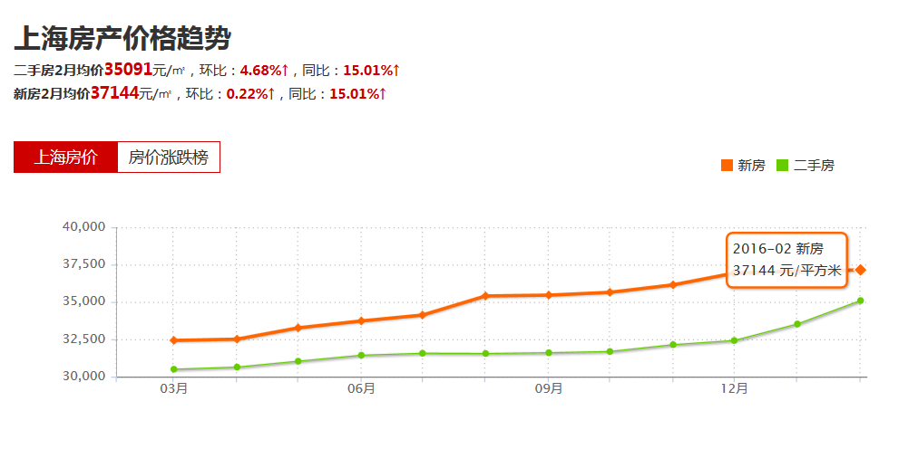
(数据来源：搜房网-房天下)
然后我查了近年来上海统计局发布的房地产市场综述，总结了下面新房平均成交价格的数据：
2015年本市新建住宅平均销售价格21501元/平方米。从区域分布看，内环线以内72066元/平方米，内外环线之间33577元/平方米，外环线以外16065元/平方米。
2014年本市新建住宅平均销售价格16415元/平方米。从区域分布 看，内环线以内53629元/平方米，内外环线之间23681 元/平方米，外环线以外13437元/平方米。
2013年，本市新建商品住宅平均销售价格16192元/平方米。从区域分布看，内环线以内48909元/平方米，内外环线之间26073元/平方米，外环线以外12661元/平方米。
2012年，本市新建商品住宅平均销售价格13870元/平方米。从区域分布看，内环线以内为55518元 /平方米，内外环线之间为20667元/平方米，外环线以外为10782元/平方米
2011年，本市新建商品住宅平均销售价格每平方米13448元，从各区域观察，内环线以内每平方米48506元；内外环之间每平方米16886元；外环线以外每平方米11294元。
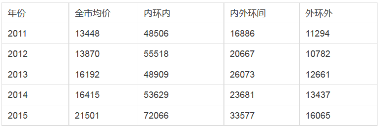
大段的文字总是会让人没有耐心细读，也不容易看出数据之间的变化，所以我会给大家做成直观的图表进行展示，文章后面会用到的一些收集到的数据也会在列出来源的同时用图表的方式进行表达
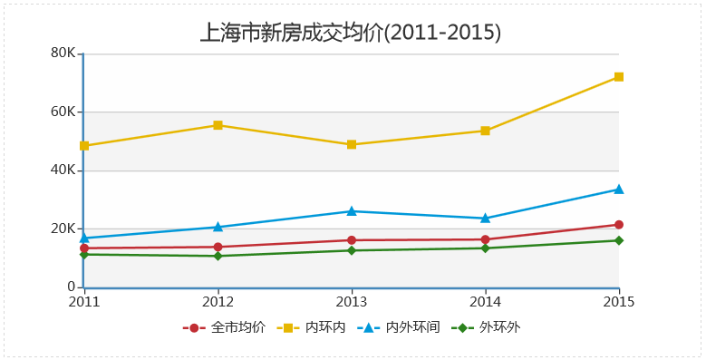
-供应角度分析
–新增建设用地面积减少
房子建在土地上，我们就先来看看土地的供应情况。都说上海是寸土寸金，这里的土地资源已经接近饱和，那么到底目前上海的土地供应已经收紧到了什么程度了呢？我们来看最新的十三五规划中提到的数据：
根据《中共上海市委关于制定上海市国民经济和社会发展第十三个五年规划的建议》，上海“十三五”时期将逐年减少建设用地增量，规划建设用地总量实现负增长，就是到2020年要守住3185平方公里的红线，比原来的规划目标减少41平方公里。未来五年，新增建设用地只有约60平方公里。下一步，关键要盘活存量，在城市更新、工业区转型升级上做文章，下定决心调整低效建设用地，重点是调整约850平方公里的工业仓储用地。
未来五年60平方公里，那也就是平均每年只有12平方公里，这是一个什么概念呢？我查了一下历年来的数据:
2015年本式分解下达区县新增建设用地计划总量800公顷
2014年本市分解下达区县新增建设用地计划总量1500公顷
2013年，本市分解下达区县新增建设用地计划总量2200公顷
2012年本市分解下达区县新增建设用地计划2700公顷
2011年分解下达区县新增建设用地计划2500公顷
2010年度下达区县新增建设用地计划2430公顷
2009年度新增建设用地计划5000公顷
2008年，国土资源部初步下达本市新增建设用地计划为4950公顷
2007年，国土资源部今年下达本市的新增建设用地计划为4850公顷
2006年，国家下达本市农用地计划4410公顷
（数据来源: 上海市规划和国土资源管理局官网 http://www.shgtj.gov.cn/tdgl/tdlyjh/
1平方公里 = 100公顷）
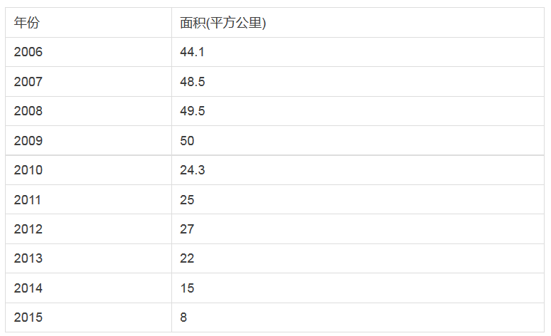
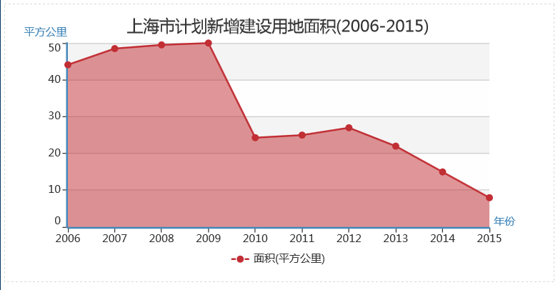
可以看出上海市计划新增建设用地面积从2010开始显著下调，也就是从十二五期间就已经开始收紧土地供应，而到了今年制定的十三五规划中的新增建设用地总量还不到2010年以前的一年的计划量。
–新建住房面积继续增加
根据上海市统计局发布的《2015年上海市国民经济和社会发展统计公报》显示，2015年上海市商品房施工面积15095.33万平方米，增长2.8%；竣工面积 2647.18万平方米，增长14.4%。商品房销售面积2431.36万平方米，增长16.6%，其中住宅销售面积2009.17万平方米，增长 12.8%。全年商品房销售额5093.55亿元，增长45.5%，其中住宅销售额4319.93亿元，增长47.8%。，增长66.9%。
我接着查阅了上海市统计局历年的年鉴，得到了下面这些数据，可以反映历年的新建住房的面积变化，主要对比指标为近几年的新建商品房的施工面积和竣工面积。
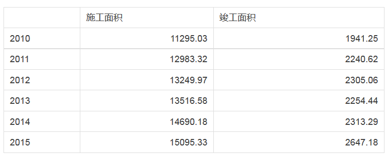
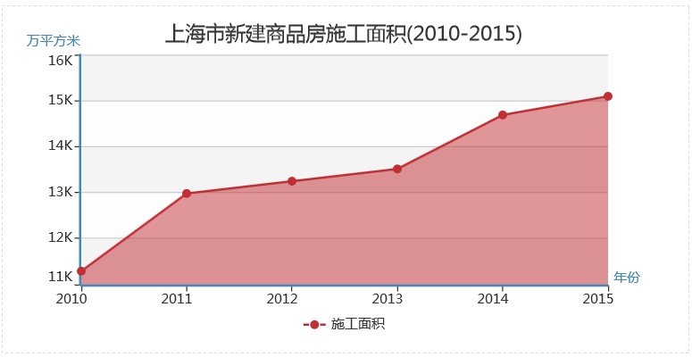
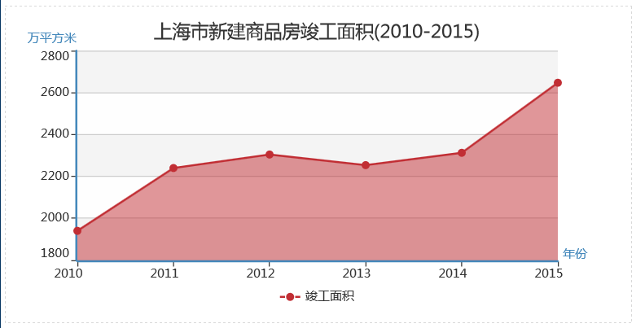
可以发现，在土地面积供应收紧的同时，房屋的建筑面积基本上仍然是逐年递增的，看来我们的房地产开发商们正在利用有限的土地上尽量造更多的房子来满足大家的需求。
–存量房消耗激增
在对上海市近年来的新建商品房的数据有了一定的了解之后，我们再来看一看上海市历年来的商品房库存消耗情况。
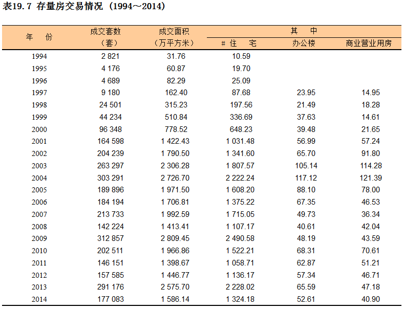
加上最新数据2015年全年存量房买卖登记面积 2647.83万平方米，绘制了下面这个图表：
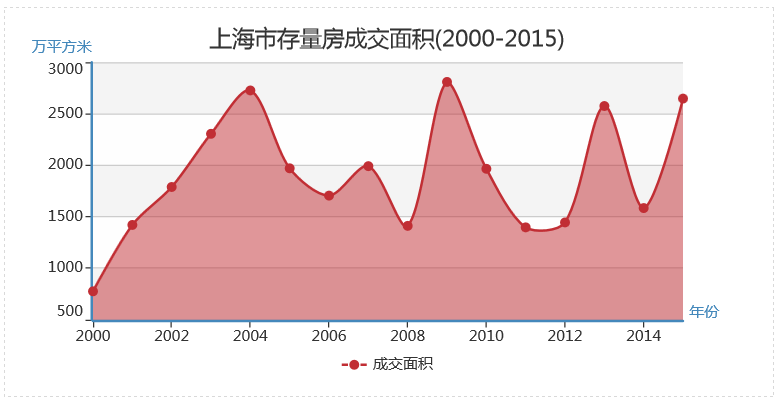
由于2015年存量房消耗量的激增，截至2016年1月的最新数据显示，上海商品住宅消化周期已经降至3.7个月。这个消化周期的计算一般是存量面积除以月均去化面积，也就是说假设没有新房建出来，现有的新房子不到四个月就被卖空。
（以上数据来源： 上海市统计局官网 http://www.stats-sh.gov.cn/data/release.xhtml ）
–二手房
二手房的供应数据比较难收集到，毕竟在中介处挂牌撤牌的随机性比较高，无法精确的统计出来，而且二手房的供需关系比较微妙，往往卖家也是买家。所以对于二手房的数据我们就来看一看上海链家发布的2015年12月及全年二手成交分析报告。
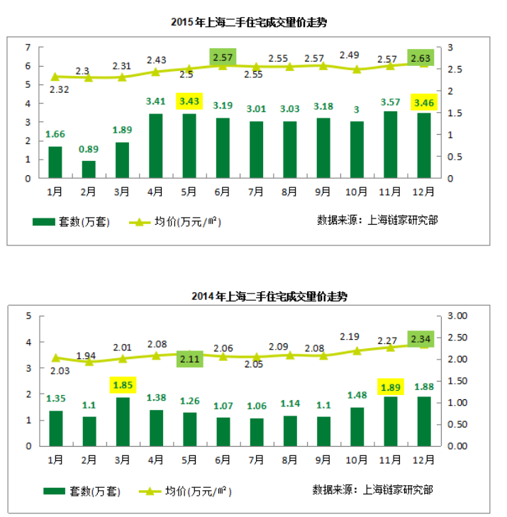
报告里的数据是2015年和2014年分开显示的，对比效果不是非常明显，于是我将上面的数据重新做了个图表，可以直观的感受到进入2015年4月份之后，二手房的成交量显著提高。
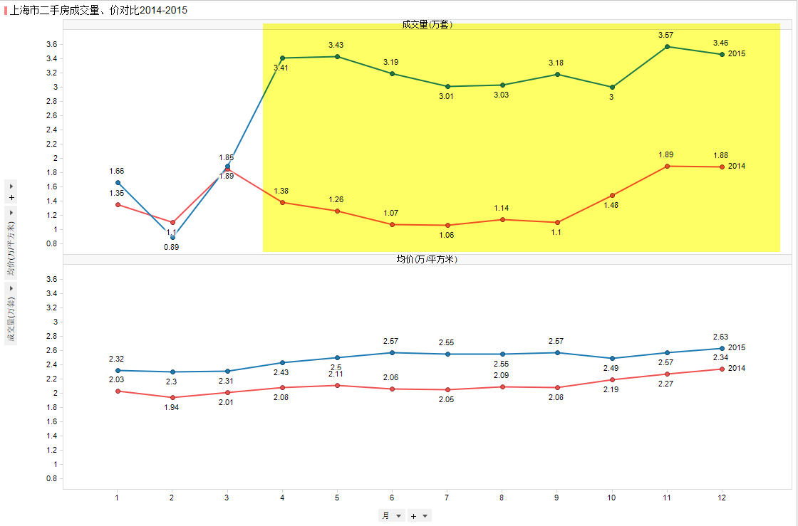
-需求角度分析
早前看到有媒体报道说上海的流入人口首次出现负增长，也就是说最近一年上海市的人口数量是流出的，于是我查了相关的数据发现2015年常住人口的确比2014年少了将近10万，而单单计算外来常住人口的话，这一年净流出了15万人。
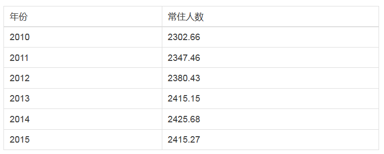
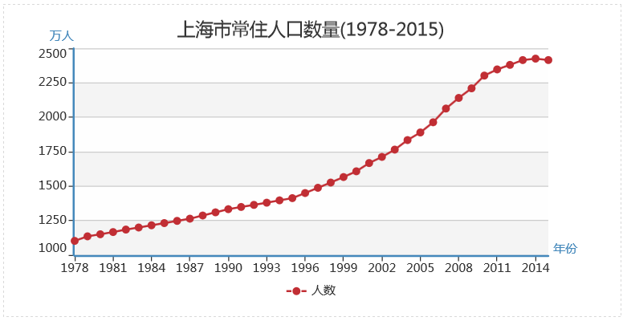
从图上可以看出，从改革开放以来，上海市常住人口首次出现了负增长。那么在人口减少的情况下为什么房价不降反升呢？那是因为总人口的减少的这一部分并不一定是有买房需求的这一步分，而事实上，上海近年来是在挑人，挑能留下的人。上海未来将要进一步建成金融中心、结算中心、航运中心、贸易中心，上海会提供越来越多高端职位。而随着这些高收入人群的增加，上海的房价势必水涨船高。
从下面的数据可以看出随着高收入人群的增加，上海市职工人均的年收入也是逐年上升。
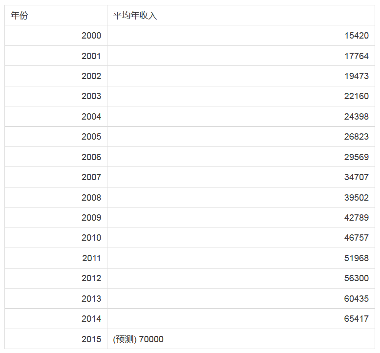
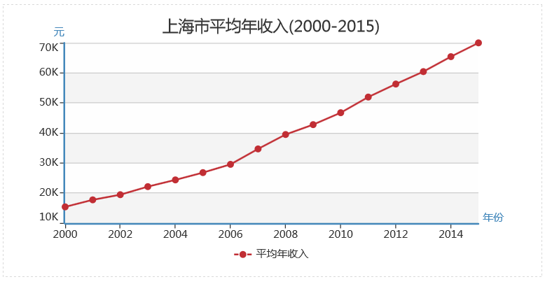
（以上数据来源： 上海市统计局官网 http://www.stats-sh.gov.cn/data/release.xhtml ）
想要寻找一些更具体的数据来支撑需求的爆发，发现太不容易了，因为需求这个东西不像供应可以比较容易量化，它是一个相对抽象的概念，就拿我自己的情况来说，在买房子换房子这件事情上可以说有需求也可以说没需求。所以能看到的分析都是一些逻辑性的观点，比如说由于最近五年房价相对平稳，而上一波疯涨中已经买好房子的人正好差不多到了想要改善住房条件的时候，所以总体释放的改善型住房需求增加。再加上对学区房的需求，二孩政策的放开等等因素，都在扩大商品房的需求。这些刚性需求的存在，加上市场买涨不买跌的心理，造成了近段时间的需求集中爆发。
-资金面分析
–宏观经济下行,部分产业资金会选择撤出实业
我们先来看一看几个反映宏观经济的重要指标：
PMI
制造业采购经理指数（PMI），是通过对企业采购经理的月度调查结果统计汇总、编制而成的指数，是国际上通用的监测宏观经济走势的先行性指数之一，具有较强的预测、预警作用。PMI是一个综合指数，由5个扩散指数（分类指数）加权计算而成。PMI通常以50%作为经济强弱的分界点，PMI高于50%时，反映制造业经济扩张；低于50%，则反映制造业经济收缩。
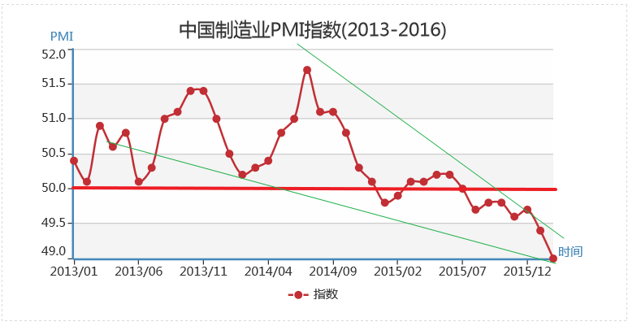
非制造业商务活动指数
中国非制造业PMI指标体系，由商务活动指数、新订单指数、新出口订单指数、在手订单指数、存货指数、中间投入价格指数、收费价格指数、从业人员指数、供 应商配送时间指数、业务活动预期指数等10个分类指数构成。由于没有合成的非制造业综合PMI指数，国际上通常用商务活动指数反映非制造业经济发展的总体 变化情况，以50%作为经济强弱的分界点，高于50%时，反映非制造业经济扩张；低于50%，则反映非制造业经济收缩。
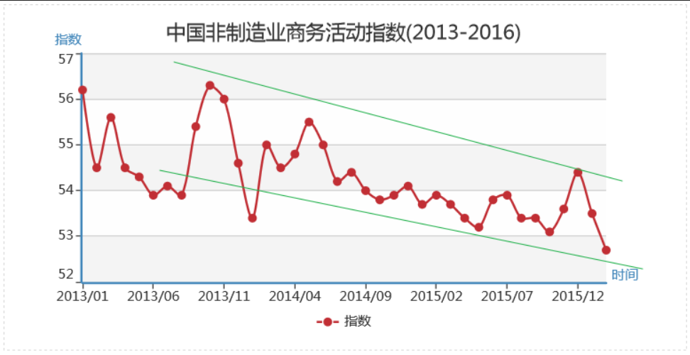
(数据来源: 国家统计局官网)
三驾马车
传统意义上拉动中国经济增长的三驾马车——出口，内需，投资
中国出口同比数据：
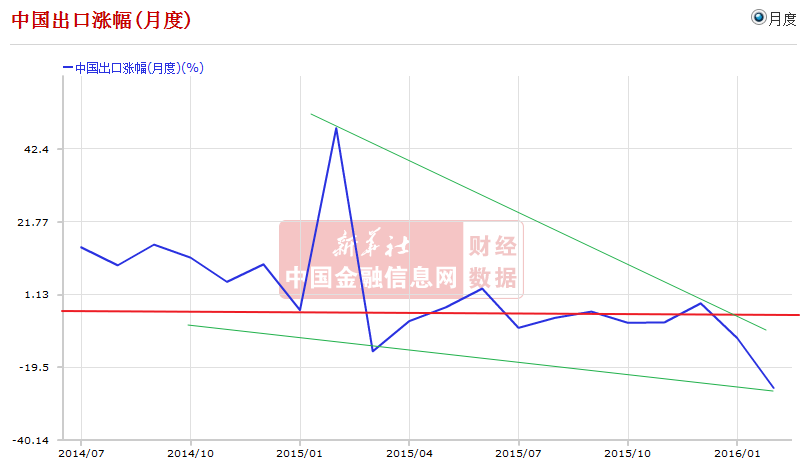
中国社会消费品零售总额同比数据：
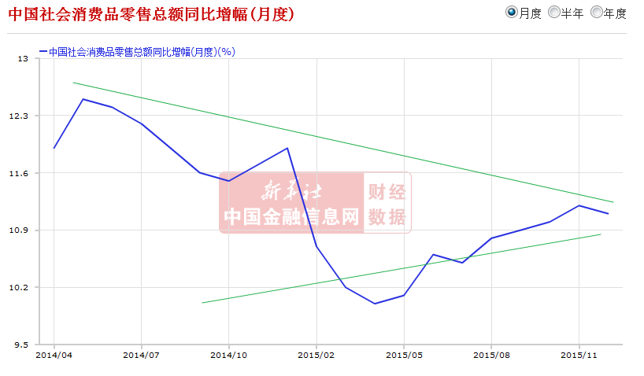
中国固定资产投资同比数据：
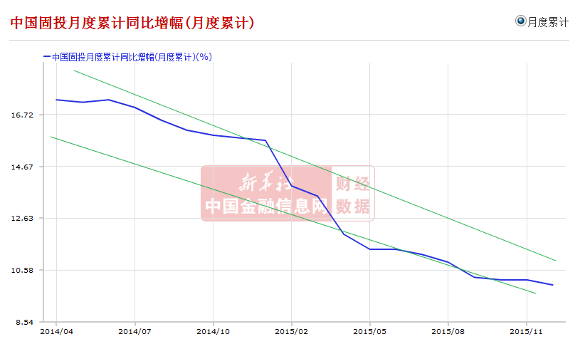
中国规模以上工业企业
2011年3月8日，国家统计局据悉，经国务院批准，国家统计调查从2011年1月起，纳入规模以上工业统计范围的工业企业起点标准从年主营业务收入500万元提高到2000万元；固定资产投资项目统计的起点标准从计划总投资额50万元提高到500万元。统计起点标准提高后，起报点以上的企业或单位逐一进行调查，未达到起点的则进行抽样调查或科学核算。
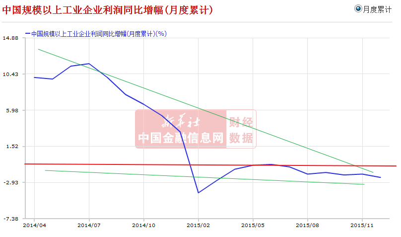
难怪最近有媒体报道说有近四成的上市企业利润不足以在北上广深买一套房。
–货币宽松,利率下行,新增贷款量增加，资金需要寻找投资渠道
我们来看一看货币相关的几个关键指标。
M0，M1，M2
M0=流通中的现金；
狭义货币（M1）=M0+企业活期存款；
广义货币（M2）=M1+准货币（定期存款+居民储蓄存款+其他存款）。
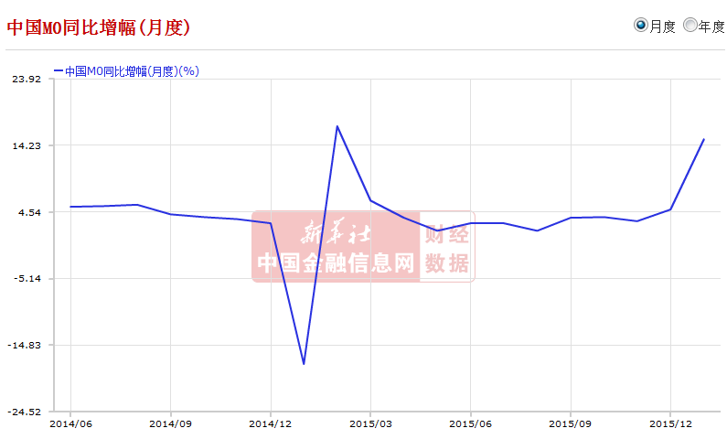
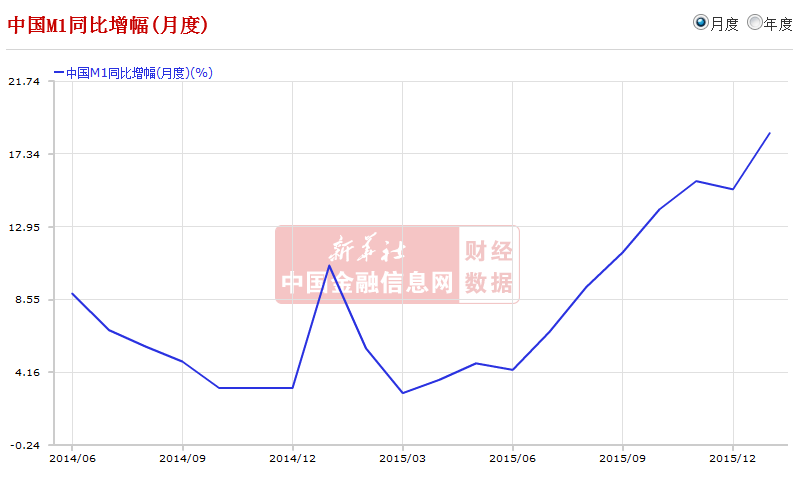
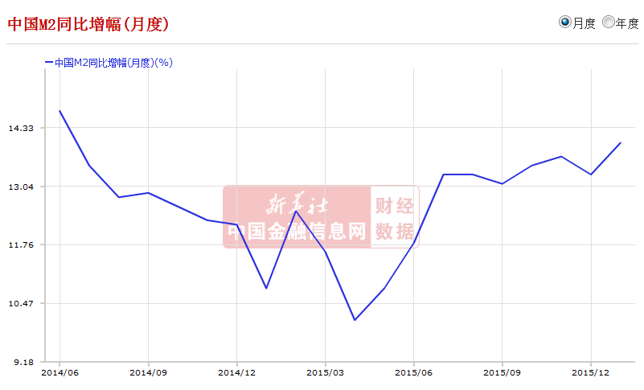
利率下行：
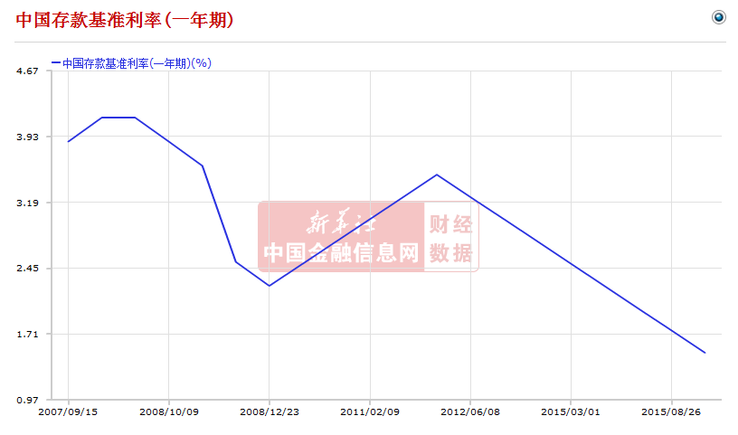
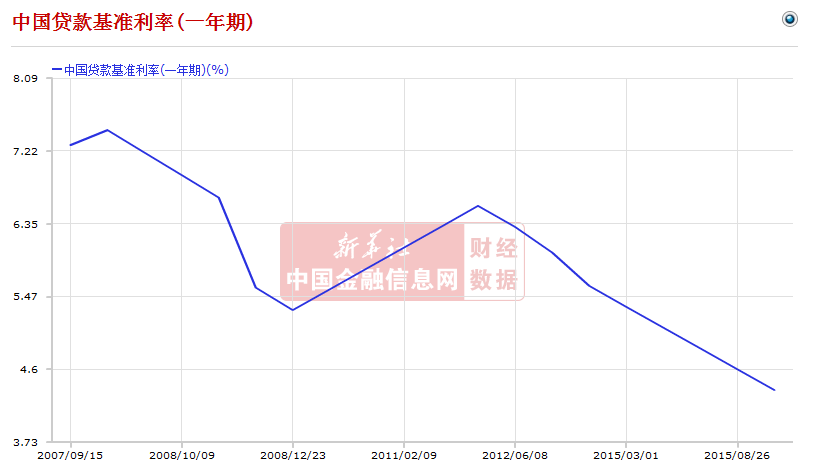
货款量增加显著：
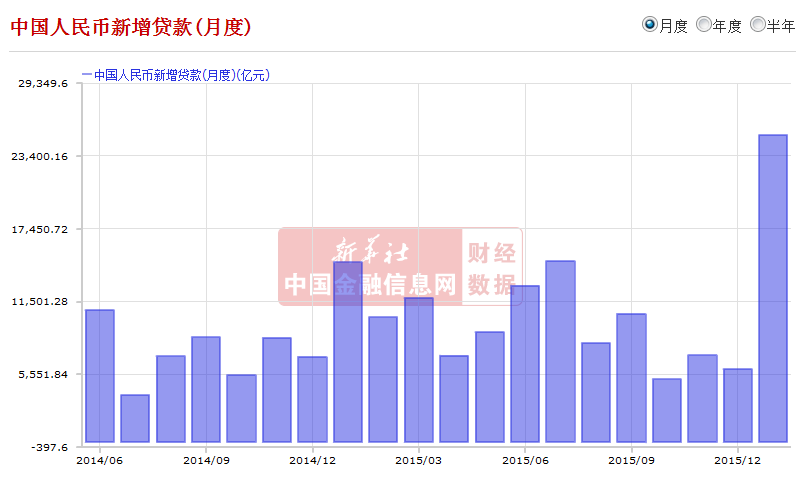
(以上资金面数据来源：新华社中国金融信息网发布的财经数据)
–股市低迷
从2015年6月股灾以来，股市持续调整，多次爆发千股跌停，场外资金持谨慎态度，部分资金会选择流向房产市场。
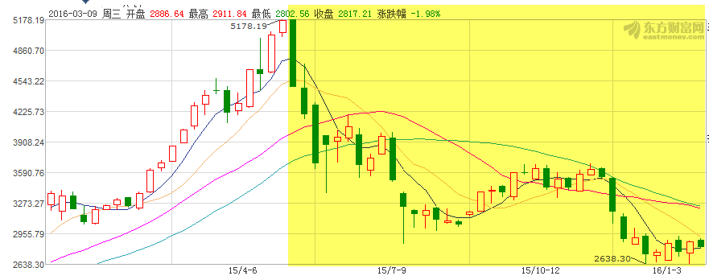
(数据来源: 东财网)
从以上三点分析可以看出资金面上较为宽松的同时又没有更多的投资渠道可以选择，加上最近公布的楼市新政减税降低了买房成本，降首付相当于增加了杠杆倍数，所以房产投资的入场资金相对进一步宽松，同时正逢年底很多公司都发放了年终奖，所以流入房地产市场的资金就有所增加。
-结尾
以上这些就是我从供应、需求和资金面三个角度对目前影响房产市场的几个因素做了一点分析，希望能对有点人提供一点参考和帮助。举的这些数据都是我自己花了三天时间一点一点收集整理的，校对也是自己一个人，所以如有不正确之处欢迎批评指正。另外有些人可能会问，那这样的情况下到底是应该买房还是卖房呢？我的观点是如果是自己住的，有改善的需求的话，现在买入新的然后把老房子卖掉是合适也是合理的，因为这是刚需嘛；如果是投资的，现在买入的话未必合适。
最新补充：是在两会上已经有上层领导发声，针对目前上海，深圳等地房价的非理性上涨提到了需要加强调控，相信两会过后不久很有可能就会有相关的政策出台，结合最近突然释放的大量需求，不排除下半年楼市就进入新一轮调整期的可能，大家需要留心哦！